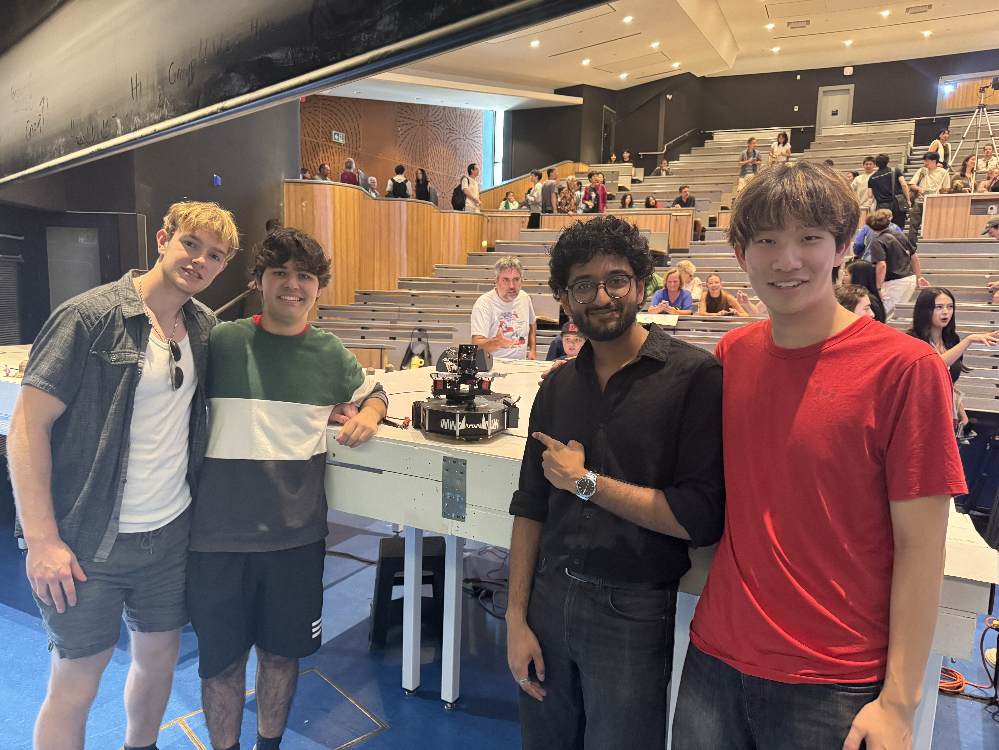

Autonomous Robot
Overview
I worked together with 3 other Engineering Physics students to design an autonomous robot. The challenge was to create a robot that could autonomously navigate a surface while following a line of electrical tape on the ground, while completing a series of tasks that are outlined here.

My Role
During the project, I was primarily responsible for the mechanical design and manufacturing of the robot. However, I did do a mini project of creating my own version of the arm, during which I implemented all of the mechanical design, as well as the electrical design, and the software implementation as well. You can read more about that in the Controllable Arm project page. I designed the robot online using OnShape, and then I manufactured the parts using a variety of methods. I primarily used 3D printers, as well as 6mm particle board which was cut with a laser cutter. There were also 6mm aluminum sheet metal that was cut with a waterjet for the arm.